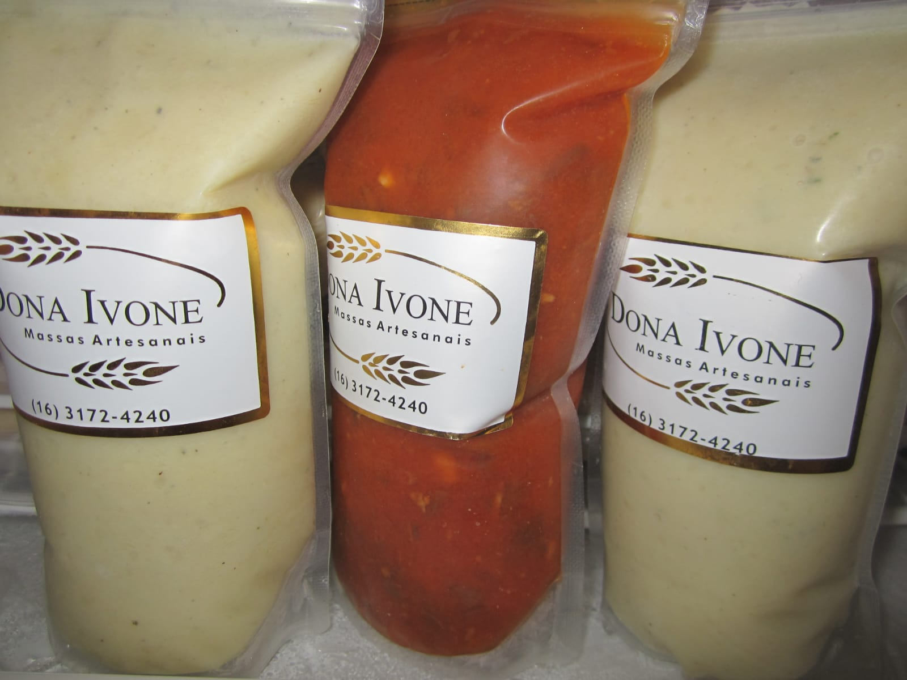

<!DOCTYPE html>
<html lang="pt-br">
<head>
    <meta charset="UTF-8">
    <meta name="viewport" content="width=device-width, initial-scale=1.0">
    <title>Canelones<title>
    <link rel="stylesheet" href="style.css">
</head>
<body>
<main>
    <h1>Canelloni</h1>
    <dl>
        <dt>Canelloni</dt>
    <dd>Cannelloni (ou canelone) são um formato de macarrão cilíndrico  típicos da culinária da Itália. O produto habitualmente é consumido com recheio salgado que pode incluir queijo ricota e vegetais como o espinafre, além da carne moída. Depois é coberto por um molho que pode ser de tomate clássico ou bechamel e gratinados ao forno.</dd></dl>  
<h3> <a href="nossahistoria.html" target="_self" rel="prev">Voltar </a> </h3>
</main>
</body>
</html>
